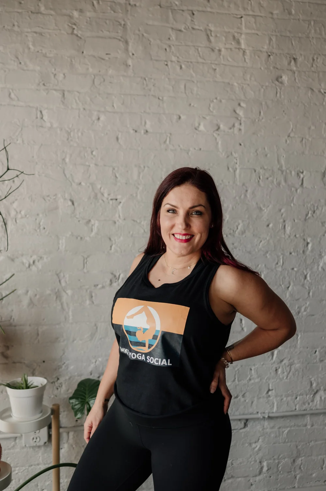
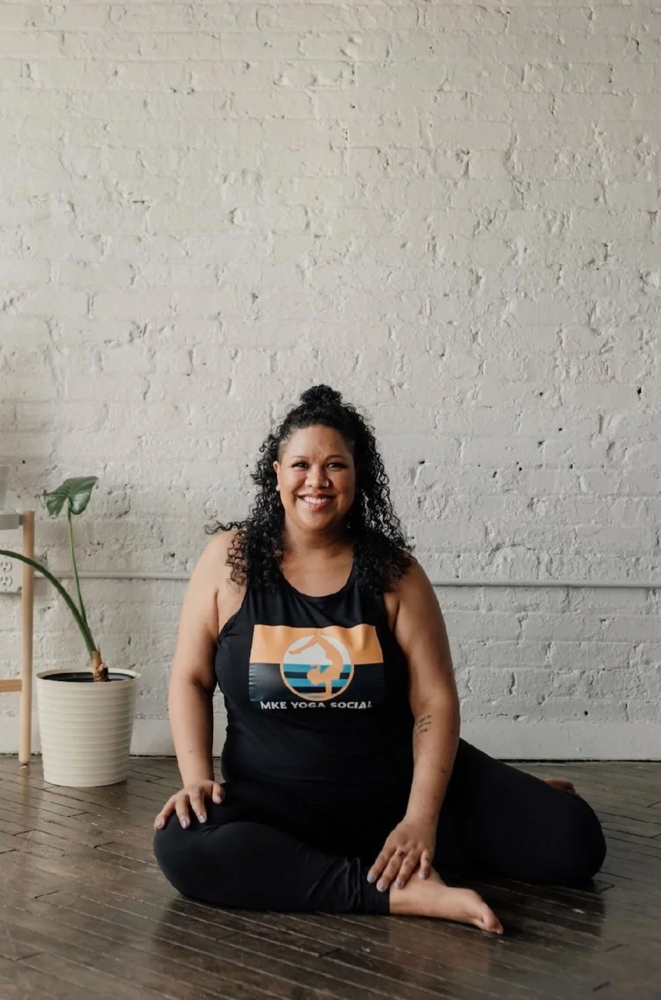
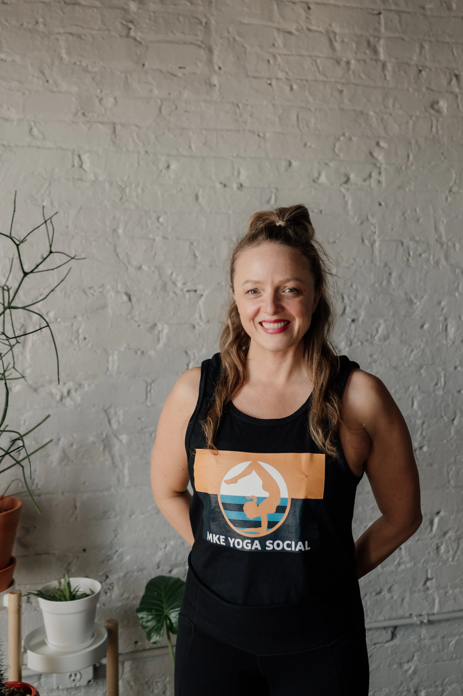
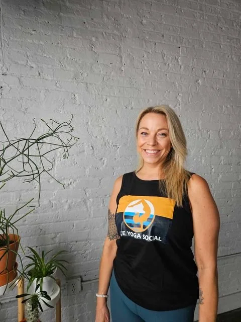

Meet Our Team
Here are the people that are working for MKE Yoga Social and maybe getting to know the team will make you want to sign up for a class with a specific member!

Jessica Hope - Founder, Yoga Teacher
My love of yoga started after a double cervical fusion in 2012. After trying just about everything, I was lucky to find pain relief through hot yoga. A few years into my practice I was in a life altering car accident that forced me to pause and reflect; ultimately leading to my decision to walk away from a corporate job to pursue yoga teacher training.
After receiving my certification, I began teaching at a hot studio. I quickly realized I needed to figure out a way to get my friends to come yoga. In 2016 I began teaching in local venues including a series of “Mind, Body + Mimosas” events at a local music hall… ultimately growing into the city’s first formalized yoga event business and the rest is history!
MKE Yoga Social is my passion. It allows us to share yoga with individuals who may be intimidated by a formal studio setting.
Outside of yoga, socializing is really my favorite thing to do! These events provide the opportunity to do just that; meet like-minded people, mingle and strengthen the local community. That's really the good stuff!

Baobi Noel - Manager, Yoga Teacher
I started practicing yoga in 2018 because it gave me the tools I needed to heal after having spine surgery due to Cauda Equina Syndrome. Yoga helps me breathe through tension and ease my physical pain, which gave me the purpose to teach yoga to others.
I teach yoga to help others find relief from their physical and emotional pain during their healing and wellness journey.
I am trained in Power Yoga, Ganja Yoga, Chair Yoga, Yin Yoga, Restorative Yoga, Yoga Nidra, Kid Yoga, Trauma-informed Yoga and Yoga for Neurological Disorders.
My classes focus on the breath as well as core and spinal health. My classes are calming and focus on tuning into oneself, which help my students feel more relaxed and in tune with their body. All are welcome to my class and I highly encourage the use of props.

Anne Koller - Yoga Teacher, Water Healer
Anne was born and raised in inner-city Milwaukee. She has returned to the city that raised her after twenty years of living and working in Japan, Brazil, Argentina, New York, and California to promote peace, reconnect youth with the water, and serve her Milwaukee community.
An artist, author, and water healer, Anne believes that art bridges emotions, expression, and our truest way to happiness and freedom. The sudden loss of her father in 2011 spurred her to explore the intersection of emotional wellness and the creative arts, resulting in art projects such as The Ashes Project, TAPIN, Follow the Water, and her book of raw and unedited prose, Free to Feel.
Anne was teacher trained in Kundalini Yoga and Meditation under Hari Kaur Khalsa, named 10 Influential Yoga Teachers Who Have Shaped Yoga in America, in New York, and is certified in Art & Yoga, Yoga Nidra, and Fluid Presence, Watsu and Water dance.

Belle Dorn - Yoga Teacher, Soundbath Practitioner
My yoga journey began in 2011 and has evolved throughout the years. My mat has become a sacred space of health, healing, growth, and exploration. As I deepen my practice, I have realized that our minds and bodies are more capable than we think. I fell in love with teaching yoga to others because I believe everybody deserves to find that safe space within themselves to explore and nurture their entire being: mind, body, and spirit.
Certified in Yoga Therapy For Neurological Conditions and Adaptive Yoga, my aim is to bring yoga to anybody and every body. Sharing the ideal that yoga will truly meet you wherever you are at.
Music is a key component to ALL of my classes. It helps us connect our breath with our movement creating a richer and deeper experience of the yoga practice. I enjoy closing my yin classes with a sound bath meditation to allow for relaxation, restoration, harmony, & inner peace. Join me soon for a fun, rejuvenating musical flow!